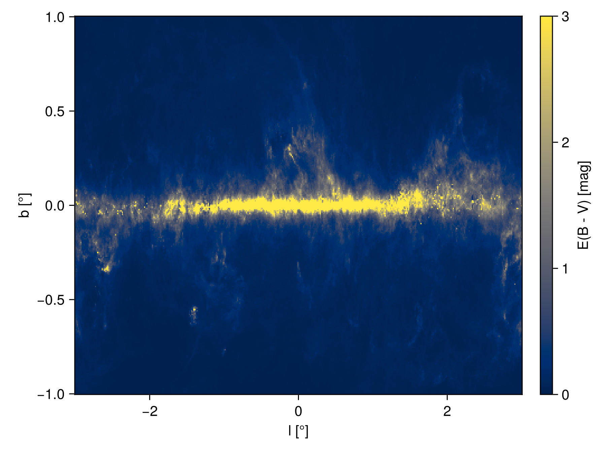

Dust Maps
Usage
julia> dustmap = SFD98Map();
julia> dustmap(0, 2)
0.020303287464050277
julia> l = range(-π, π, length=5)
-3.141592653589793:1.5707963267948966:3.141592653589793
julia> b = range(-π/2, π/2, length=5)
-1.5707963267948966:0.7853981633974483:1.5707963267948966
julia> [dustmap(l[i], b[j]) for i in 1:length(l), j in 1:length(b)]
5×5 Matrix{Float64}:
0.0159853 0.105782 1.40486 0.0158918 0.0119615
0.0159853 0.0268289 3.47788 0.0654852 0.0119615
0.0159853 0.0343457 99.6976 0.103875 0.0119615
0.0159853 0.0432165 2.60569 0.0178195 0.0119615
0.0159853 0.105782 1.40486 0.0158918 0.0119615

Advanced Usage
Our dust maps also have native support for Unitful.jl, Measurements.jl, and SkyCoords.jl.
julia> using Measurements, Unitful
julia> using SkyCoords: GalCoords
julia> using Unitful: °
julia> l = 45°; b = 0°;
julia> dustmap = SFD98Map();
julia> dustmap(l, b)
6.4290331211742355 mag
julia> l = l ± 0.1°; b = b ± 0.3°;
julia> dustmap(l, b)
6.4 ± 5.7 mag
julia> dustmap(GalCoords(l, b))
6.4 ± 5.7Available Dust Maps
DustExtinction.SFD98Map — Type
SFD98Map([mapdir])Schlegel, Finkbeiner and Davis (1998) dust map.
The first time this is constructed, the data files required will be downloaded and stored in a directory following the semantics of DataDeps.jl. To avoid being asked to download the files, set the environment variable DATADEPS_ALWAYS_ACCEPT to true. You can also provide the directory of the two requisite files manually instead of relying on DataDeps.jl. Internally, this type keeps the FITS files defining the map open, speeding up repeated queries for E(B-V) values.
References
(dustmap::SFD98Map)(l::Real, b::Real)
(dustmap::SFD98Map)(l::Quantity, b::Quantity)
(dustmap::SFD98Map)(s::SkyCoords.AbstractSkyCoords)Get E(B-V) value from a SFD98Map instance at galactic coordinates (l, b), given in radians. Uses bilinear interpolation between pixel values. If l and b are Unitful.Quantity they will be converted to radians and the output will be given as UnitfulAstro.mag. If a SkyCoords.AbstractSkyCoords is passed, it will be converted to galactic coordinates (requires Julia >= v1.9).
Example
julia> using DustExtinction
julia> m = SFD98Map();
julia> m(1, 2)
0.013439524544325624And now we can use a SkyCoords type as input:
julia> using SkyCoords
julia> s = GalCoords(1, 2);
julia> m(s) == m(1, 2)
trueUse broadcasting to get E(B-V) values for multiple coordinates:
julia> l = 0:0.5:2; b = 0:0.5:2;
julia> m.(l, b)
5-element Vector{Float64}:
99.69757461547852
0.10180447359074371
0.019595484241066132
0.010238757633890877
0.01862100327420125And now we can add angle units:
julia> using Unitful
julia> m.(l * u"rad", b * u"rad")
5-element Vector{Gain{Unitful.LogInfo{:Magnitude, 10, -2.5}, :?, Float64}}:
99.69757461547852 mag
0.10180447359074371 mag
0.019595484241066132 mag
0.010238757633890877 mag
0.01862100327420125 magDustExtinction.CSFDMap — Type
CSFDMap([mapdir]; dataproduct=:ebv)Corrected SFD (CSFD) full-sky Galactic dust-reddening map of Chiang (2023). CSFD is based on SFD but with the extragalactic large-scale structure (cosmic infrared background) contamination removed via a tomographic reconstruction and subtraction technique.
The map data are stored as a HEALPix FITS binary table with Nside = 2048 in ring ordering and Galactic coordinates. The default data product is csfd_ebv.fits, which gives E(B-V) reddening on the same scale as the original SFD. The mask.fits file may be queried by passing dataproduct=:mask. The bitmask bits are:
- Bit 0 (
LSS_corr): footprint within which the LSS is reconstructed and CSFD = SFD - LSS (otherwise CSFD = SFD). - Bit 1 (
no_IRAS): area with no IRAS data (DIRBE data filled in SFD); the LSS removal uses a 1° smoothed LSS. - Bit 2 (
cosmology): area where both the LSS and CSFD are most reliable for precision cosmology analyses.
The first time this is constructed without a mapdir, the required data file will be downloaded and stored following the semantics of DataDeps.jl. To avoid being asked to download the file, set the environment variable DATADEPS_ALWAYS_ACCEPT to true. Internally, this type keeps the FITS file open and loads the full pixel array into memory for efficient repeated queries.
References
Example
julia> using DustExtinction
julia> m = CSFDMap(); # downloads data on first use
julia> m(1.0, 0.5) # l=1 rad, b=0.5 rad
0.04069592f0And now we can use a SkyCoords type as input:
julia> using SkyCoords
julia> s = GalCoords(1, 0.5);
julia> m(s) == m(1, 0.5)
trueUse broadcasting to get E(B-V) values for multiple coordinates:
julia> l = 0:0.2:1; b = 0:0.2:1;
julia> m.(l, b)
6-element Vector{Float32}:
0.0
0.5457138
0.20758994
0.06955756
0.04855148
0.019249504And now we can add angle units:
julia> using Unitful
julia> m.(l * u"rad", b * u"rad")
6-element Vector{Gain{Unitful.LogInfo{:Magnitude, 10, -2.5}, :?, Float32}}:
0.0 mag
0.5457138 mag
0.20758994 mag
0.06955756 mag
0.04855148 mag
0.019249504 mag